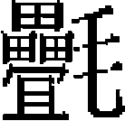

外國五
占城 爪哇 琉求 島夷諸國
占城，本秦象郡林邑縣地，東濱海，西際爪哇，南通真臘，北與安南之驩州接壤。東西五百里而贏，南北三千里。都城去海一百二十里，近瓊州，舟行順風一日可至。其南曰施備州，西曰上源州，北曰烏里州，領大小州凡三十有八。亦有縣、鎮諸名。宋淳熙中，占城以舟師襲真臘，入其國都。慶元五年，真臘大舉復仇，俘其主以歸，國遂亡，其地悉歸真臘，因名占臘。其後國王或曰真臘人，或又謂占城恢復云。
至元十五年，世祖既平宋，將有事海外。時荆湖行省左丞唆都遣人至占城，還言其王舍利咱牙信合八剌麻哈迭瓦願内附。詔封占城郡王，遣侍郎教化迪、總管孟慶元、萬户孫勝夫，與唆都同往，諭其王來朝。
十七年，國王保寶旦拿囉耶邛南詙占巴地囉耶遣使奉表降，兼貢珍物及犀、象。
初，朝廷以占城國王孛由補剌者吾稱臣内附，命唆都就其國立占城行省撫之。既而其子補的專國，不聽命。會萬户何子志、千户皇甫傑使暹羅，宣慰使尤永賢、亞闌等使馬八兒國，道占城，皆被執。事聞，命唆都討之。
兵出廣州，航海至占城港。港口北連海，旁有小港五，通其國大州，東南皆山，西傍木城。官軍依海岸屯駐。蠻兵治木城，四面約二十餘里，起樓棚，立礮臺百餘。又木城西十里建行宫，其國王親率重兵屯守。遣都鎮撫李天祐招之，七往，終不服。
分遣瓊州安撫使陳仲達以兵由水路攻木城北面，總把張斌，百户趙達攻東面沙觜，省官分二道攻南面。舟泊岸，爲風濤所碎者十七八。蠻兵開木城南門，建旗鼓，乘象拒戰，敗之。官軍入木城，與東北二軍合。其王棄行宫，燒倉廪，殺永賢、亞闌等，與其臣逃入山谷，遣使者陽乞降，許之。官軍入大州，王遣其舅寶脱秃花奉國王信物、雜布二百疋、大銀三錠、碎銀一甕爲質。又獻金葉九節標槍，言：「國王欲來，病未能起，先使持其槍來，以見誠意。」復令第四子利世麻八都八德剌、第五子舍利印德剌來見，詭言世子補的被傷死，王頰中箭未愈，故先使二子來議入覲事，以款我師。省官疑非真王子，聽其還，遣千户林子全偕往覘之。二子在途先歸，子全入山兩程，國王遣人來拒，不果見。又殺何子志、皇甫傑等百餘人。
寶脱秃花俄又至，自言：「我祖父、伯、叔，皆爲國王，傳至我兄孛由補剌者吾，殺而奪其位，我實銜之。願禽其父子以獻，請給大元服色。」唆都不虞其詐，賜衣冠，撫諭而行。有居占城唐人曾延者，來言：「國王逃於大州西北鴉侯山，詣交阯、真臘、闍婆諸國借兵未至，懼唐人洩其事，將盡殺之，延等覺而逃。」未幾，寶脱秃花偕其宰相報孫達兒及撮及大師等五人來降。省官引曾延與見，寶脱秃花曰：「此姦細也，國軍皆潰散，安敢復戰？且今未附州郡凡十二處，每州遣一人招之，無不服者。」
唆都猶信其言，遣子全等同赴大州。比至城西，寶脱秃花背約間行，自北門乘象去。萬户張顒等領兵赴國王所棲之地，近水城二十里。賊浚濠塹，拒以大木，官軍斬刈超距奮擊。轉戰至木城下，山林阻隘不能前，蠻兵旁出截歸路，官軍殊死戰，得脱。
朝廷更命阿墖海發兵萬五千人、船二百艘助討，以安南道阻，不果至。又命萬户忽都虎、烏馬兒率江淮軍二萬人赴唆都軍前，而唆都已回軍。
忽都虎等至占城，知官軍退，令百户陳奎招其國王來降。其王遣阿不蘭納款，具言被官軍劫掠，貧無以獻，俟來年當備物，令嫡子入朝。未幾，果遣其孫濟日理勒蟄奉表歸順。
朝廷未知也，再命鎮南王脱歡發兵假道交趾征之。國王乞回軍，願出土産，歲修職貢，使大盤亞羅日加翳大巴南等十一人詣闕獻馴象，並賀聖誕節。舊州主寶嘉婁亦奉表入附。自是終元之世，貢使不絶。
英宗至治三年，遣其弟保佑八剌遮貢方物。
泰定帝致和元年，遣使來貢，兼言屢爲交趾所侵，帝下詔和解。文宗至順三年，遣其臣阿南那那里沙等，奉金書表入貢。
惠宗後至元元年，遣使獻方物，且言交趾遏其貢道，詔遣使開諭。
其所貢：雲龍形通犀帶、菩薩石。薔薇水、猛火油，皆貯瑠鉼中以進。有火珠，大如雞卵，正午承日影取艾燃之，立見火。其王每坐見官屬，一膜拜即起白事，事畢復一膜拜而退。親近之臣見王跪，疏遠者拱手而已。王腦後髽髻，散披吉貝衣，或大食錦，或川法錦大衫，戴金花冠，七寶裝瓔珞爲飾，脛股皆露，紅革履，無襪。男子以白

布纏胸下，垂至足，衣袖甚窄，撮髮爲髻，散垂餘髾於後。婦人亦腦後撮髻，無笄梳，其服飾與男子同。人多乘象，食山羊、水兕。國無城郭，無絲蠶，有米、粟、豆、麻。每歲稻熟［一］，王自刈一把，從者及羣婦女競刈之。其王或以兄爲副王，或以弟爲次王。設高官八員，分掌東西南北各二，無奉禄，所管土俗資給之。别置文吏五十員，有郎中、員外、秀才等，管資儲寶貨。又司帑廪者二十員，主軍卒者二百餘員，皆給龜、魚以充食，免其調役而止。其大姓號婆羅門。兵萬餘，人月給秔米二斛，歲給布三五匹。王乘木杠，四人舁之，從者十餘輩，一人執檳榔柈合前導。樂有胡琴、笛、鼓、大鼓。樂部亦列舞人。兵器則刀、槍、弓矢、手牌。夜卧，惟王有床，諸臣則施地蓐。以十一月十五日爲冬至，相賀。十二月十五日祀天，縛木爲墖，王及官民用衣物、香藥焚其上，州縣各以土産獻王。人有疾病，采生藥服食。地不産茶，飲椰子酒。刑，小過以藤杖，當死者標槍抉其喉，或令象蹈之，或以鼻捲撲，皆馴習隨人意。世與交趾相惡，數攻殺。兩國使者並至，則分東、西賜宴。朝則交人入垂拱殿，占城趨紫宸以避，若誓不相見者。占城屬國曰賓章龍，即佛書之舍城，其地與占城相連。爪哇在海外，視占城益遠。其名爲諸史所不載。自泉南航海者，先至占城，而後抵其國。
世祖出師海外，惟爪哇之役最大。自至元十七年，始降旨招諭其國。二十三年，遣必剌蠻等至爪哇，自是通使往來無間。後遣孟祺持詔往，國王刺其面遣歸，帝怒，決意伐之。
二十九年二月，詔史弼、高興、亦黑迷失，並爲福建行省平章，會福建、江西、湖廣三省兵凡二萬，發海舟千艘，齎糧一年，降虎符、金符、銀符以百計，用備功賞。大軍會泉州，自後渚啟行。風急濤湧，舟掀簸，士卒數日不能食。過七洲洋、萬里石塘，歷交阯、占城界。明年正月，至東董、西董山，牛崎嶼，入混沌大洋，橄欖嶼，假里、馬答、枸闌等山，駐兵伐木，造小船以入。遣宣撫官楊梓、全忠祖等，帶五百餘人先往慰諭。大軍繼進，弼等至爪哇之杜並足，議分軍水陸進攻。弼率都元帥那海等水軍，自杜並足，過戎牙港口，至八節澗。興與亦黑迷失帥馬步軍，自杜並足陸行，遣副元帥土虎登哥等，乘鑽鋒船，由戎牙路，至麻喏巴歇之浮橋。
時爪哇方與隣國葛郎搆怨，其王爲葛郎酋哈只葛當所殺。其壻土罕必闍耶攻葛郎不勝，退保麻喏巴歇。聞弼等至，以其國山川、户口，并獻葛郎國地圖納降。先令楊梓、全忠祖引其宰相昔剌難答吒耶等五十餘人來迎，大軍會八節澗。澗上接杜馬班王府，下通莆奔大海，乃爪哇咽喉要地。其謀臣者希寧官沿河泊舟楫，觀望成敗，再三招之，不降。乃於澗邊設偃月營，留萬户王天祥守河津，土虎登哥等水陸齊發。者希寧官懼，棄船宵遁，獲鬼頭大船百餘艘。令都元帥那海等鎮八節澗海口。大軍方行，土罕必闍耶遣使詐稱葛郎主追殺至麻喏巴歇，乞官軍救援。亦黑迷失信之，先遣都元帥鄭鎮國引軍赴章孤援之。高興抵麻喏巴歇，却稱葛郎兵未知遠近，興回至八節澗。尋報賊兵夜當至，興仍赴麻喏巴歇。未幾，葛郎兵果三路來攻。亦黑迷失率萬户李明迎賊于西南，不遇。興與萬户脱歡由東南路接戰，殺傷數百人，餘賊奔潰山谷。俄西南路賊奄至，興再戰至晡，又敗之。乃分軍三道伐葛郎，土虎登哥將水軍泝流而上，亦黑迷失由西道，興等由東道，土罕必闍耶以本軍繼其後。期會答哈城，葛郎國主將兵十餘萬拒敵，三戰，賊敗潰，擁入河死者亡算。進圍其城。是夕，哈只葛當出降，並俘其妻、子。
土罕必闍耶求歸，具降表，兼貢所獲珍器，遣萬户捏只不丁、甘州不花率兵護送之。至中途，殺二使叛去，且合衆來攻。弼等且戰且行，三百里，得登舟，行六十八日夜，達泉州，士卒亡者三千餘人。帝怒弼等玩寇無功，各杖之。
成宗大德元年，爪哇國遣舍剌班直木達奉表乞降，始授宣敕。元貞元年，來獻方物。
仁、英兩朝，皆遣使賀天壽節。泰定二年，亦奉表入貢。致和元年，詔優護爪哇國王札牙納哥，仍賜衣物、弓矢。文宗至順三年，遣其臣僧伽剌等，奉金書表以獻。惠宗至正二十三年，遣使澹濛加伽殿來進方物，帝賜其王三珠虎符及織錦文幣。
其地平坦，宜稻、麻、粟、豆，不産茶。煮海爲鹽，出金銀、犀牙箋、檀香、茴香，亦務蠶織。室宇壯麗，多飾金碧。剪銀葉爲錢。其酒出蝦蝚丹樹，甚香美。其俗有名而無姓。王則椎髻，戴金鈴，衣錦袍，躡革履，坐方牀。官吏入謁，三拜而退。國人見王出則坐，俟其過乃起，以爲敬也。
琉求亦海中島也。當泉州東，水行五日而至。其王歡期氏。自隋時，王名渴剌兜，始見於史。
國人呼王爲可老羊，妻曰多拔茶，所居曰波羅檀。塹栅三，三重，環以流水，樹棘爲藩。土無賦斂，有事則均税。用刑無枷鎖，縛以繩。死刑，以鐵錐尺許入其頂殺之。俗無文字，望月虧盈以紀時，候草榮枯以紀歲。人深目長鼻，有小慧。男女皆以白紵繩纏髮，從項後遶盤至額。男去髭鬢，鳥羽爲冠，裝以珠貝，簪以赤毛，形製不一。婦人黥手，蟲蛇文，以羅紋白布爲帽。土産多鬭鏤樹，似橘葉，密條，纖絲下垂，織其皮并雜色紵可爲衣，綴毛、垂螺爲飾，雜色相間，下垂小貝，聲如珮環。懸珠於頸，編藤爲笠，出入必戴之。有刀、矟、弓箭、劍、鈹之屬。鐵刃皆薄小，以骨角輔之。組 爲甲，或用熊、豹皮。王出則乘木獸，舉之而行。人驍健善走，好格鬬，耐創而難死。收鬬死者祭神，羣聚食之，以髑髏告王，王則賜之冠，使爲隊帥。王所居壁下，多聚髑髏。土宜稻、粱、黍、豆，以石爲鍾，火耕水耨。氣候與嶺南相類。無牛、羊、驢、馬。煮海水爲鹽，釀木汁爲酢，米麵爲酒，食皆用手。凡宴會，必待呼名然後飲。上王酒，亦斥其名歌呼。一唱衆和，其音哀怨。嫁娶以酒肴、珠貝爲聘，相悦便爲匹偶。所産無他奇異，故市舶罕至。
爲甲，或用熊、豹皮。王出則乘木獸，舉之而行。人驍健善走，好格鬬，耐創而難死。收鬬死者祭神，羣聚食之，以髑髏告王，王則賜之冠，使爲隊帥。王所居壁下，多聚髑髏。土宜稻、粱、黍、豆，以石爲鍾，火耕水耨。氣候與嶺南相類。無牛、羊、驢、馬。煮海水爲鹽，釀木汁爲酢，米麵爲酒，食皆用手。凡宴會，必待呼名然後飲。上王酒，亦斥其名歌呼。一唱衆和，其音哀怨。嫁娶以酒肴、珠貝爲聘，相悦便爲匹偶。所産無他奇異，故市舶罕至。
隋大業三年，煬帝令羽騎尉朱寬，入海訪求異俗，海帥何蠻言：「每天清風静時，東望隱約，若煙若霧，遠不知幾千里，未知何國。」遂與寬俱往，語言不相通，掠一人，并取其布甲而還。時倭國來使，見之曰：「此彝邪久國人所製也。」明年，遣武賁郎將陳稜等，自義安浮海擊之。至高華嶼，又東行二日，至鼊嶼。又一日，至琉求。軍中有崑崙人，頗解其語，遣慰諭之。琉求不從，出兵抗拒，擊走之。入其都，焚宫室，俘男女數千人歸。歷唐、五代，皆與中國絶。
宋淳熙間，琉求巨豪率數百人，猝至泉州水澳圍頭等村殺掠，人閉户則免，刓其門圈以去。擲以匙筯，則縱拾之。見鐵騎，争刓其甲。官軍追襲之，泅水而遁。
其境在漳、泉、福、興界，與彭湖諸島相對，西、南、北岸皆水，水至澎湖漸低，近琉求則謂之落漈。漈者，水趨下而不回也。凡西岸漁舟到澎湖以下，遇颶風漂流落漈，回者百一，故其地小而最險。
世祖至元二十八年，海船萬户楊祥請以六千軍往，降則受之，不聽命則伐之。朝廷從其請，命祥爲都元帥，將兵抵其國。有書生吴志斗者，上言生長福建，熟知海道利病，若欲收附琉求，且就澎湖發船前往，相水勢地利，然後興兵未晚。乃命祥充宣撫使，志斗假禮部員外郎，捧詔以行。詔曰：「朕收撫江南已十七年，海外諸番罔不臣屬，惟琉求密邇閩境，未曾歸附，議者請即加兵。朕惟祖宗立法，凡不庭之國，先遣使招降，來則安堵如故，否則必致征討。今命使宣諭爾國，果能慕義來朝，存爾國祀，保爾黎民。若不効順，自恃險阻，舟師奄及，恐貽後悔。爾其慎擇之。」
明年三月，自汀州尾澳東行，至海洋中，遠望有山長而低者，約去五十里。祥言是琉求，獨乘小舟至山下見其部衆。令軍官劉閏等二百餘人，以小舟偕三嶼人陳煇登岸。衆不解三嶼人語，爲其殺死者三人。還至澎湖，覓志斗弗能得。初，志斗嘗斥言祥生事邀功，言誕妄難信。至是，疑祥害之。祥顧稱志斗懼誅逃去，志斗妻、子訴於官，勑發福建行省置對。後遇赦，不竟其事。
成宗元貞三年，福建行省平章高興言琉求可圖狀［二］。遣省都鎮撫張浩、新軍萬户張進赴其國，擒生口百三十人而返。自是終元之世，史不再見也。
史臣曰：琉求，今之臺灣。今之琉求，至明始與中國通。或乃妄合爲一，誤莫甚矣。
海外島夷之族，澎湖最近，分三十六島，有七澳介其間。其地屬泉州晉泉縣。土人煮海爲鹽，釀秫爲酒，採魚蝦爲食。至元初，設巡檢司，東爲琉求，與澎湖相對。
自琉求以南，曰三島，居大崎山之東，又名三嶼。其人常附海舶至泉州貿易。世祖至元三十年，選人招撫之。平章政事伯顔等言：「臣等與識者議，此國之民不及二百户，時有至泉州爲商賈者。入琉求軍船，過其國，國人餽以糧食，館我將校，無他意。乞不遣使。」世祖從之。
其附近小國曰答陪，曰海瞻，曰巴弄吉，曰蒲里咾，曰東流里。
其西南爲麻逸國，男女椎髻，俗尚節義。婦喪夫，則截髮絶食七日，多死，不死則終身不再醮。舶商守信，終不爽約。
在闞麻羅華之東南，爲無枝拔，漢言五山也。男女編髮纏頭，民種薯以食。有酋長，知信義，失信則罰金。煮海爲鹽，釀椰漿、蕨粉爲酒。
有龍涎嶼，羣龍出没海濱，故其地産龍涎香，一名撒八兒也。
西南爲丹馬令國，地與沙里佛來安爲鄰。
又有日麗國，地少稔，仰食於他國。
麻里嚕，即吕宋島，俗尚節義。番官死，其婦不再嫁於平民，必閥閲相稱乃嫁之，否則削髮爲尼。
遐來物，即吉利門之異譯。至元中，大兵攻爪哇，自枸欄山進至吉利門，即此地也。俗尚怪妖，男女挽髻。人死，以生腦灌其尸，欲葬而不腐。
彭坑，俗亦如之，男女椎髮［三］。石崖周匝如山栅，田沃穀登。
吉蘭丹國，屬三佛齊。俗尚禮，男女束髮。外有小港，水深而鹽、魚美。
又有丁家廬國，與三角嶼相對，亦三佛齊之屬國。俗尚怪妖，男女椎髻，刻木爲神，殺人瀝血祭之，以禳旱疫及卜吉凶。
曰戎國，俗陋，男女方頭，蓋兒生之後以木板夾之，四季祝髮。
曰羅衛，在其南，風俗勤儉，男女文身爲禮，即唐羅越國也。
曰東冲古剌，俗輕剽，男女斷髮，人死撇于海。
曰蘇洛鬲，曰針路，曰八都馬，曰淡邈，皆附近羅斛之島國也。
尖山國，在小東洋中，因山建國，有屬地八節澗。史弼伐爪哇，由戎牙路港口至此。
三佛齊國，人多蒲姓，習水陸戰，服藥，刃不能傷。
嘯噴，本屬三佛齊，後自立爲王。
浡泥，崇佛像，愛中國人，去三佛齊四十日程。
其西南有國，曰明家羅，分三島。
曰重迦羅，産鹽敷樹及石楠，田沃，亞於爪哇。男女撮髻，無酋長，年尊者統攝之。其附近諸番曰孫陀，曰琵琶，曰丹重，曰員嘺，曰彭里。史弼帥水軍由戎牙路至八節澗、重迦羅，即戎牙路之異譯也。
曰都督岸，曰文誕，曰蘇禄，曰龍牙犀角，曰蘇門傍，皆近暹諸島國也。
曰舊港，爪哇屬國也。男女披長髮。
曰龍牙菩提，四面皆山。
曰毗舍耶，男女撮髻，以墨汁刺身，伏荒山窮谷，虜他國人而售之。
曰班卒，俗尚質，披短髮，煮海爲鹽，釀米爲酒，有酋長率之。
曰蒲奔，風俗果決，男垂髻，女拳髮，有酋長。所謂「莆奔大海」，蓋因此國而得名歟？
假馬裏打，俗澆薄，男女髡頭，不知廉恥。地産番羊，高大可騎。
文老古，俗薄，男女椎髻，煮海爲鹽，沙糊爲食。
古里地悶，俗浮濫，男女斷髮。
龍牙門，俗好劫掠，男女人多椎髻。
崑崙山，遠截於大海中，人無居室，怪形異狀，無衣褐，日食果及魚蝦。劉深追宋端宗，執其戚俞廷桂之地也。
靈山，民以結網爲生計，田野闢，宜耕種。
東西竺，俗樸陋，男女斷髮。田瘠，歲仰淡洋米穀以足食。
花面，其地沮淤，田沃，宜耕種。男女以墨汁刺于面，故謂之花面國。俗淳，有酋長。
淡洋，一名毯陽。俗淳，男女椎髻。港口通貿易，有大溪之源二千餘里，奔流合於海。其海水清淡，故名淡洋。元貞元年，遣使奉金字表來朝。
須文答剌，地墝穀少，男女繫布縵，俗薄。其酋軀幹長修，一日之間必三變色，或青，或黑、赤。每年殺十餘人，取血浴之，以免疾病。所謂「速木都剌」是也。
僧加剌，俗信佛。土人長七尺餘，面紫，身黑，巨眼而長手，温而壯。所謂「信合納帖音」是也。又名獅子國。
交欄山［四］，氣候熱，俗尚射獵。國初，史弼征爪哇，遭風於山下，舟幸多，壞一舟，免，唯存釘灰。見其山多木，大軍乃造舟十餘艘，若檣柁等靡不備［五］。有病卒百餘人不能去，遂留此，至今漢、番雜處。
特番利，俗淳，男女椎髮。田沃，稱爲樂土。
班達里，與鬼屈波思國爲鄰，俗尚怪妖，有鬼爲災，年必祭之。男女椎髻。
曼陀郎國之西北隅，與播寧接壤。二國不事侵伐，故累世婚姻。酋長七尺餘，男女挽髻。
南巫里，地當南洋要衝，民環山而居，田穀少，以劫掠爲俗，男女椎髻。至正二十一年十一月，福建行省遣八合魯思招降南巫里及别里剌、里倫、大力四國。北溜地勢下，千嶼萬島，潮流迅急，水中有石，槎利如鋒刃，不能行舟。番民以 子權錢用。
子權錢用。
下里國，居小唄南古里佛之中，又名小港口。俗淳，民尚氣，出入必攜弓矢及牌。男女削髮。
高郎步，在大佛山之下。地濕，男女撮髻。
沙里八丹國，在古里佛山之後，地沃衍，俗美，男女繫布纏頭。民有罪，以石灰畫圜於地，令人立圜内，不令轉，此極刑也。
金塔，古崖下有金塔，高十丈，國名因之。土瘠民貧，男女椎髻。女業織，壽至百餘歲。
東淡邈，近希苓數日程。俗重耕，男女椎髻。
大八丹國，居西洋後，一名雀婆領。俗淳，男女短髮。
加里那國，近具山，産白牛。俗淳，男女髡髮。
土塔，居八丹之平原。俗好善，民事桑麻，男女斷髮，其身如漆。
第三港，古號馬淵，今名新港。風俗與八丹同。
華羅國，俗尚怪妖，民間常塑泥牛，刻石像，諷經敬之。男女皆黝黑，額搽牛乳、檀香。
麻那里，在迷黎國東南，居海中之絶島。俗侈，男女辮髮。
加將門里，去加里國二千餘里，其地堰水瀦，田宜穀。俗薄，男女挽髻，雜回回人。
波斯離，與大夏連境，地方五千餘里。俗尚侈麗，男女編髮。
撻吉那國，居達里之地。俗同戎、羌，男女黝黑，眼圓，白髮鬙鬅。
千里馬，北接大奮山，田瘠穀少，俗淳，男女斷髮。
須文那，與班支尼那接界。俗鄙薄，男女蓬頭。又譯爲須門那。
小唄南，風俗、男女與古里佛同。元貞初，禁海商以細貨與馬八兒、唄南、梵荅剌亦納三國交易。
古里佛，當巨海之要衝，西洋都會也。俗近古，其用法至謹。
朋加剌，俗淳，女纏頭。鑄銀錢名唐加，每錢重八分，子一萬五百二十餘，以權小錢用。
巴南巴西，在大響山南。男女體小，俗澆薄。
放拜，居巴隘亂石之間。風尚樸厚，男女身黑，有酋長。
大烏麥，近巴南西洋中。俗淳，人脩長，女有髭焉。然善鬭，用標槍、毒矢，他族皆畏之。鑄金爲錢。即宋烏然泥國也。
萬年港，俗同之，人椎髻。
馬八兒嶼，在加將門之右。瀕山而居，俗淫氣熱，男女散髮，其地産珠，民以塗黑爲美，裸而居。曰拔忽，曰里達那，曰骨里傍，曰安其，曰伽忽，皆附庸於馬八兒。海外諸國，惟馬八兒與俱藍爲之綱領，而俱藍又爲馬八兒後障。其地産黄金、蘇方木及椒，氣熱而俗淫。
至元間，行省左丞唆都等奉璽書往招諸番，馬八兒、占城降，俱藍不降。復遣廣東招討使楊廷璧招之，行三月至其國，國主必訥的遣其弟首那本不剌木奉表降，約來歲入貢。尋授哈撒兒海牙爲俱藍宣慰使，偕庭璧再往。自泉州入海，復行三月，抵僧伽耶山，舟人以阻風乏糧，勸往馬八兒，或可假陸路達俱藍。乃至馬八兒新村馬頭登岸，其國宰相馬因的問：「官人以何事至此？」庭璧告其故，因及假道事，以不通爲辭。與其宰相不阿里相見，又言假道，亦以他事辭。詰旦，二人至館，屏人，令其譯者通情實言：「我算灘兄弟五人，皆聚加一之地，議與俱藍交兵。及聞天使來，對衆詭稱本國貧陋。其實回鶻金珠寶玉盡出本國，算灘兄弟皆有降心。若馬八兒既下，我使人持書招之，可使盡降。」時庭璧以風不得至俱藍，遣哈撒兒海牙入朝計事，期以冬至候北風再舉。至期，朝廷遣庭璧獨往。抵俱藍，其國主迎拜璽書，遣其臣祝阿里沙忙里八的奉表，進寶貨及黑猿一。其後貢使時至。未幾，馬八兒果遣僧撮及班入朝，將至上京，帝遣使迓之。繼遣福建平章亦黑迷失詣其國取佛鉢舍利，浮海行一年乃至，與其國使偕來，進奇獸一，似騾而巨，毛黑白間錯，名阿墖必。又貢花牛、水牛、花驢、土彪，歲以爲常。
成宗元貞二年，遣樂也奴等使馬八兒，賜其國王墖喜二珠虎符。
仁宗延祐初，馬八兒國王昔剌丁遣其臣愛思丁入貢。
其附近諸國：曰放拜，曰大烏爺，曰阿思里，曰俚伽塔，曰天堂，曰天竺，曰層摇羅，曰馬魯澗，曰甘埋里，曰麻呵斯離，曰波羅斯，曰羅婆斯，曰烏爺。大率皆西印度之地焉。
【校勘記】
［一］「熟」，原作「熱」，據《宋史》卷四八九列傳第二百四十八《外國傳五》改。
［二］「狀」，原作「肰」，據文意改。邵遠平《元史類編》卷四二、周煌《琉球國志略》卷一五、潘相《琉球入學見聞録》卷一均作「狀」。
［三］「椎髮」，原作「稚髮」，據文意改。按本卷特番利、厤逸國均作「男女椎髮」、「男女椎髻」，查繼佐《罪惟録》卷三六、茅瑞徵《皇明象胥録》卷四、費信《星槎勝覽》卷二、萬斯同《明史》卷四一四，並言彭亨一名彭坑，「椎髻繫單裙」。
［四］「交欄山」，原作「幻欄山」，據汪大淵《島夷志略》、張廷玉《明史·外國傳四》、萬斯同《明史》卷四一四、査繼佐《罪惟録》卷三六、費信《星槎勝覽》改。
［五］「柁」，原作「陀」。按汪大淵《島夷志略》云：「若檣柁、若帆、若篙靡不具備。」費信《星槎勝覽》、游樸《諸夷考》云：「舵桿、桅檣、篷箬無所不備。」據改。
本章完!